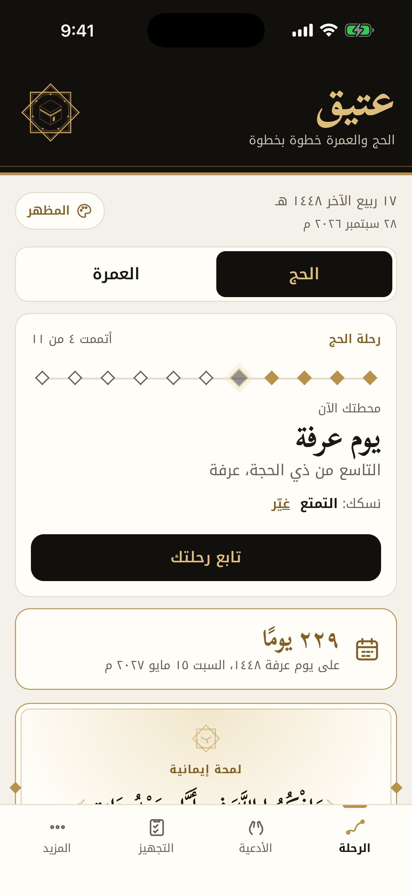
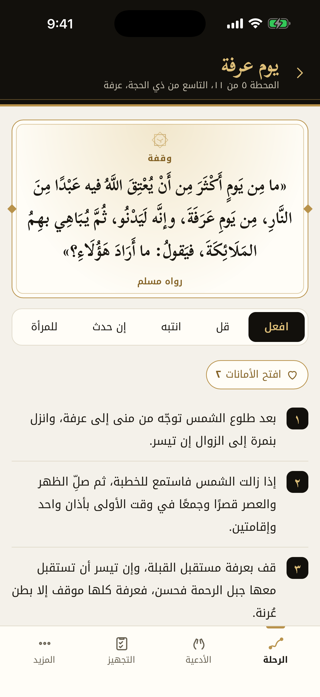
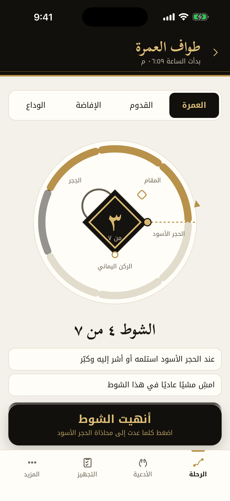
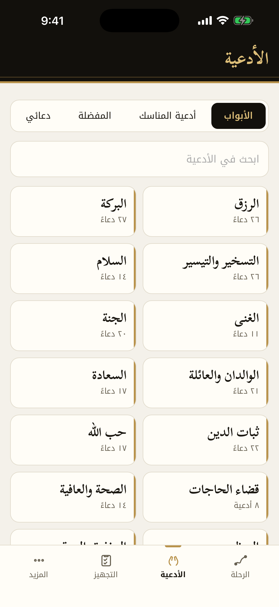
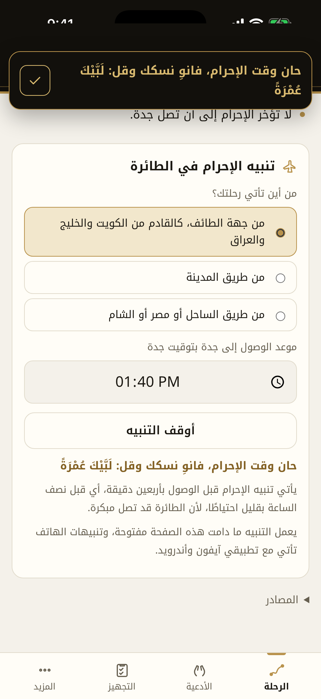

﴿
ثُمَّ لْيَقْضُوا تَفَثَهُمْ
وَلْيُوفُوا نُذُورَهُمْ
وَلْيَطَّوَّفُوا بِالْبَيْتِ
الْعَتِيقِ
﴾
سورة الحج، الآية ٢٩
عتيق
الحج والعمرة خطوة بخطوة
يعمل كله دون إنترنت





عتيق
عتيق · Ateeq
الحج والعمرة خطوة بخطوة
متوفّر الآن على App Store
ateeq.3li.info